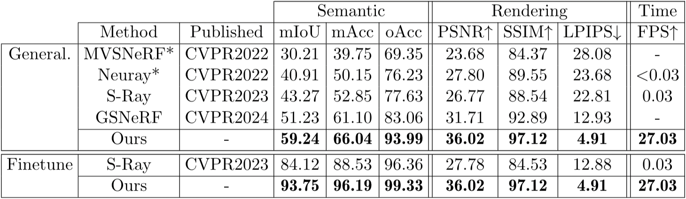
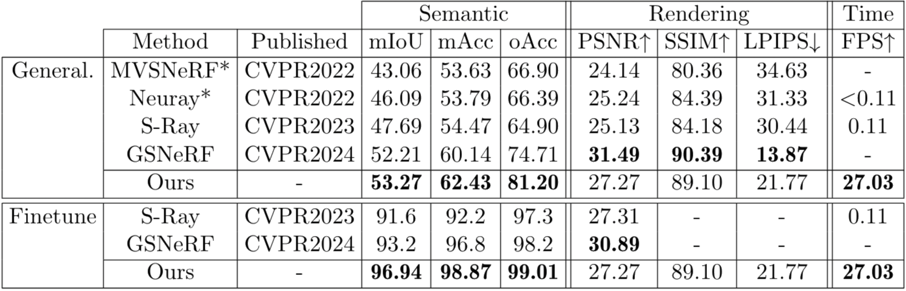
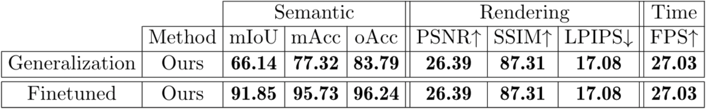

Quantitative
Experiments were conducted on three datasets: Replica, Scan-Net, and ScanNet++, representing synthetic and real-world indoor scenes. Experimental settings meticulously followed those of GSNeRF for Replica and ScanNet. Details and
splits are provided in the supplementary material. As evaluation metrics, we employed mean
Intersection over Union (mIoU), mean Accuracy (mAcc), and overall Accuracy (oAcc) for
segmentation, and Peak Signal-to-Noise Ratio (PSNR), Structural Similarity (SSIM), and
Learned Perceptual Image Patch Similarity (LPIPS) for rendering quality. Inference speed
was measured in Frames Per Second (FPS).

Comparison on REPLICA of the proposed method against the state of the art
for generalizable semantic segmentation and after finetuning on a specific scene. * denotes
the addition of a semantic head.

Comparison on ScanNet of the proposed method against the state of the art for
generalizable semantic segmentation and after finetuning on a specific scene. * denotes the
addition of a semantic head.

Quantitative results on ScanNet++ of the proposed method for generalizable semantic segmentation and after finetuning on a specific scene.
Qualitative
We present qualitative results on two scenes from the Replica and ScanNet++ datasets. Our evaluation includes both semantic segmentation performance
and depth prediction, demonstrating the robustness of our learned features.